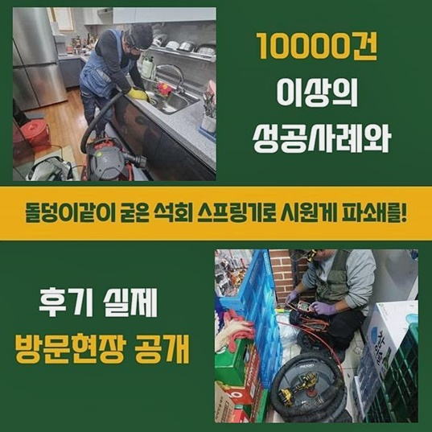
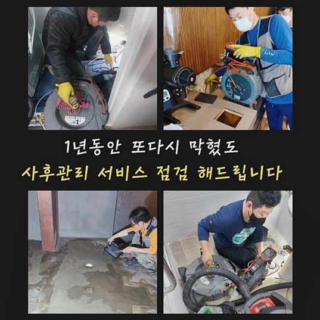
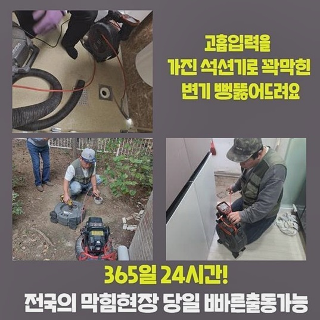
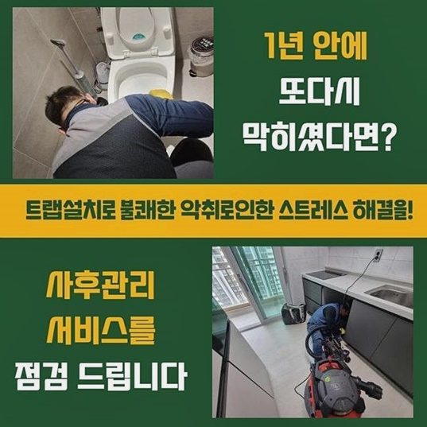
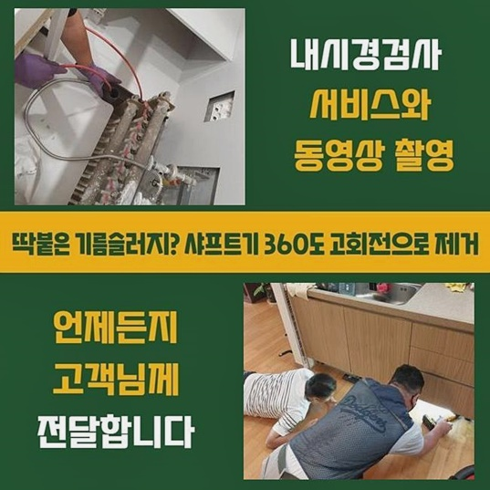
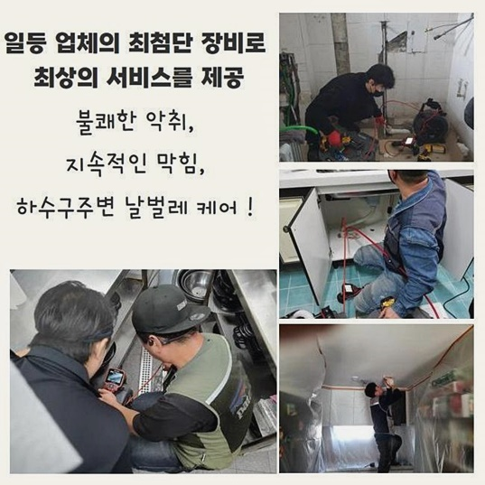

🏠 용인 신갈동변기역류 구성동 배관뚫기 설비하는곳
용인 변기막힘 전문 시공 후기

📋 작업 개요
- 위치: 용인
- 서비스 유형: 변기막힘, 하수구막힘, 배관막힘, 역류해결, 뚫는업체, 배관청소, 고압세척, 배관보수
- 작업 일시: 2024. 8. 30. 10:20
- 업체명: 하수구수사대 (010-5615-2118)
🔍 문제 상황
용인 신갈동변기역류 구성동 배관뚫기 설비하는곳
하수구막힘때문에 출동드린 고객분의 영업시설은 물빠짐이 조금씩 느려졌다고 의뢰를주셨는데 이러한현상은 신속조치가 필요하다는 신호인데요
셀프조치를 통해서 시도해보다가 일시로만 뚫리게되어 불편함이 느껴지신다면 전문가의 지원을받으시는게 좋아요
빠른해결을 원하신다면 저희업체로 전화를주시면 곧장 출동해드려서 해결해드릴게요
영업시설에서 하수구가막혔을시 문제를 타파켜시켜드리고 깔끔한환경으로 유지하실수있게끔 도와드리고있으니 맡겨만주세요
고객께서 일러주신 내용을토대로 판단을내리고 제일먼저 찌꺼기이물을 석션기기로 제거한뒤 하수구를오픈해 배관내부를 확인했어요
배관안쪽을 파악하고자 부속품들을 분리하여 살펴봤습니다
안속깊은곳에 퇴적된 기름기와 이물질들을 깔끔히제거하고 정화작업도 진행했어요
역류원인인 막힘현상을 해소했고 정상적으로 배수상태가 가능하게끔 조치를취했죠
깨끗하게 사용하시도록 관리하는법과 유지보수까지 안내해드렸죠
확실한조치로 배관을뚫어내 의뢰자의 편리함을 높일수있었네요
다음현장은 다세대거주지 였는데요 필요한도구들을 준비한뒤 현장장소로 방문했어요

🔎 원인 분석
💡 전문가 진단: 정밀 진단 장비를 사용하여 슬러지의 고착 여부를 판명하고 타격/세척 작업을 실시했습니다.
물이빠지는것이 점차 느려지고있다고 알려주셨고 배관세척도 여러번 시도해보셨지만 온전하게 해결되지못했다고 불편함이 느껴진다고 하셨어요
배수문제는 전문적인지식이 필요한까닭에 저희업체가 맡게되어 다행이에요
저희의 도움을통해 불편한점이 해소되었으면 좋겠습니다
같은문제로 막히는현상이 재발되었을때 마음편안히 전화주신다면 조속하게 처리해드릴게요
원활하게물이 흘러가지못하고 역류증상도 발발되어 냄새가퍼지는 긴박한 상황인것이 확인되었고 이것들로인해 고객분에게 곤란함들을 초래시켰습니다
주방이용시 배수상황이 원활하지않고 물이넘친다면 환경상에도 좋지않습니다
그렇기에 신속한대처가 요구되었어요
여러현장의 경험이풍부한 기술자분들이 직접방문해서 원인이무엇인지 찾아드렸어요
발생한이유는 오염물질로인해 막힘현상이 발생된걸로 알수있었죠
여러차례 일러드렸지만 이런증세는 신속하게 해결해야하는데 하수도가막혀 역류로이어지면 일상을 영위하는데있어 불편함을 초래시킬수가 있답니다
저희의경우 여러분의 하수구시스템을 쾌적하게 바꾸어드리고자 조속하게 처리해드릴것을 약속드려요
현장마다알맞게 조치를취해 하수구막힘에 대해서 확실하게 타파시킬게요
원활한배수를 위하여 노력하고있으며 혹시라도 실패하게된다면 수리금액을 받지않습니다

🔧 작업 과정
막히는일에있어 예방법도 알려드리고있죠
고객께서 쾌적환생활을 유지할수있도록 최선다해 작업할게요!
우리들은 각각 하수구마다 특징에대해 파악하여 대책을 마련하는 과정들을 강조하여 수행해요
내시경기계를 이용하여 하수구깊은곳을 확인하며 오염정도와 배관구조를 파악한답니다
내시경기는 잔해물이 어떤모습으로 보여지는지 명확하게 보여주고 이것을토대로 의뢰자에게 현재상황을 설명하죠
이런방식으로 진행하여 효율성이있고 정밀한 써비스를 제공하고있죠
간헐적으로 배관세척을 진행하는게 좋습니다
하수구내부에는 기름슬러지나 석회물질이 퇴적되므로 제거해줘야하죠
다시한번 일러드리는것으로 배관cctv를 활용하면 육안으로 살펴보기 어려운곳까지 진단할수있죠
이뿐만아니라 이물질의 현황까지 살펴볼수있어요
잔해물질을 소거하려면 전문장비들이 필요한데요
청소작업시 슬러지의경우 분해시키기 어렵다보니 물을사용해 불린후 흡입장비로 제거하는것이 효율적이에요
이물이누적되서 딱딱한형태로 바뀌었다면 샤프트기계를 이용해 제거시킬수있죠
오늘장소는 채소껍질과 기름이물 덩어리들이 하수도를 가로막은 상황이었죠
이렇다보니 단순한 작업만으로는 대처하기 어려운상태였고 샤프트도구를 구비해서 분해를해준뒤 고압세척기를 통하여 하수도를 정리하기로 작업계획을 정했어요
이것으로 배수가 막혔던현상이 완전하게 뚫릴것으로 기대가되는데요
샤프트로 분쇄해보니 잔여되어있던 찌꺼기와 오염물이 분해되었어요
막힌지점의경우 파쇄강도에있어 조절하며 세밀한과정이 필요했는데 이로인해 배관파손을 발생시키지않고 분쇄할수있었네요
파쇄가끝나니 이물이조각나서 청소하기 용이했고 이다음에는 고압세척기계로 제거하기로했죠
수압력이강한 물줄기로쏘아 하수구안속의 잔해물질들을 소거시켰는데 마찬가지로 배관에파손을 입히지않게끔 조심스레 작업해야했죠


✅ 작업 완료
모든과정들을 마무리한후 가져온 장비들을 챙기고서 현장을나섰어요
배관문제 방치하지말고 문제를 발견하자마자 점검해보시는걸 추천드려요
문제를 내버려두신다면 이차적인 증세들로 불거질수있어 신속처리가 필요한것이죠
지역관계없이 한시간안으로 내방가능하고 확실하게 작업과정에 대해서 공개해드리니 염려마세요
믿고맡기시면 신뢰해주신만큼 성공적인결실로 보여드릴게요
문제와관련하여 궁금한것들이 해소되지못했다면 편하실때 연락주셔서 질의하시면 친절히 응대도울게요




⚠️ 하수구 배관 막힘 예방 및 관리 가이드
- ✅ 머리카락, 비닐, 물티슈 등 물에 분해되지 않는 이물질은 하수구 유입을 절대 금지해 주세요.
- ✅ 하수구 거름망을 씌우고 모여진 이물질은 주기적으로 쓰레기통에 바로 비워주셔야 합니다.
- ✅ 배관 노후가 심할 경우 이물질이 더 쉽게 걸리므로 주기적인 배관 세척(고압세척 등)을 권장합니다.
- ✅ 작업 후 1년 이내 재발 시 하수구수사대에서 무상 A/S 보증 서비스를 제공합니다.
💡 핵심 정리
- 확실한 장비 작업(내시경 점검 및 샤프트 스케일링)으로 원인을 뿌리 뽑습니다.
- 작업 후 1년 이내에 동일한 부위 재발 시 100% 무상 A/S 서비스를 보장합니다.
- 서울 · 경기 · 인천 전 지역에 24시간 언제든 긴급 출동할 수 있도록 항시 대기 중입니다.
❓ 자주 묻는 질문 (FAQ)
🚨 용인 변기막힘 문제로 고민이신가요?
정확한 원인 진단과 확실한 시공으로 재발 없는 해결을 약속드립니다.
24시간 긴급 출동 | 서울 · 경기 · 인천 전지역 | 1년 내 재발 시 무상 A/S